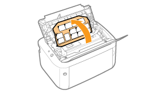
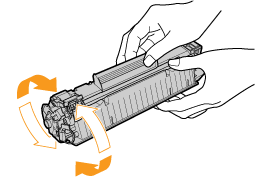
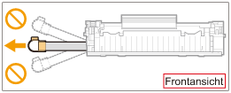
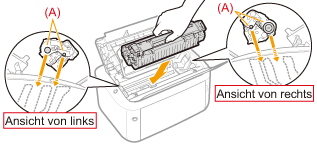
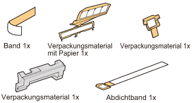

|
HINWEIS
|
|
Bewahren Sie das entfernte Verpackungsmaterial auf
Es wird für den Transport des Druckers benötigt, wenn dieser umgesetzt oder gewartet werden soll.
Informationen zum Verpackungsmaterial
Die Form oder Position des Verpackungsmaterials kann geändert und Verpackungsmaterial ohne Ankündigung hinzugefügt oder entfernt werden.
|
1
Öffnen Sie das Ausgabefach.

2
Biegen Sie das Papier in Ihre Richtung.

3
Öffnen Sie die obere Abdeckung an der Öffnung (A) auf der rechten Seite.

4
Biegen Sie das Papier nach hinten.

5
Entfernen Sie das Verpackungsmaterial im Inneren der oberen Abdeckung.

6
Nehmen Sie die Tonerpatrone heraus.

7
Schütteln Sie die Tonerpatrone fünf oder sechs Mal wie in der Abbildung dargestellt, um den Toner im Inneren der Patrone gleichmäßig zu verteilen.

8
Legen Sie die Tonerpatrone auf eine ebene Fläche.
9
Entfernen Sie das in der Abbildung dargestellte Verpackungsmaterial.

10
Biegen Sie die Schlaufe um, und ziehen Sie dann das Abdichtband (ca. 50 cm) heraus.

|
WICHTIG
|
|
Vorsichtsmaßnahmen beim Herausziehen des Abdichtbandes
Ziehen Sie das Abdichtband nicht diagonal, nach oben oder nach unten heraus. Wenn das Band reißt, kann es möglicherweise nur noch schwer vollständig herausgezogen werden.
 Wenn das Abdichtband zur Hälfte stoppt, ziehen Sie es vollständig aus der Tonerpatrone heraus. Wenn Reste des Bandes in der Tonerpatrone verbleiben, kann dies zu einer verminderten Druckqualität führen.
Entsorgen Sie das entfernte Abdichtband gemäß den örtlichen Bestimmungen.
|
11
Entfernen Sie das Verpackungsmaterial mit Papier im Inneren der oberen Abdeckung.

12
Setzen Sie die Tonerpatrone ein.
Setzen Sie die Tonerpatrone fest in den Drucker ein, bis sie die Rückseite des Druckers berührt, während Sie (A) an beiden Seiten der Tonerpatrone an den Tonerpatronenführungen im Druckerinneren ausrichten.

13
Schließen Sie die obere Abdeckung.
 Wenn Sie die obere Abdeckung nicht schließen können Wenn Sie die obere Abdeckung nicht schließen könnenVergewissern Sie sich, dass die Tonerpatrone im Drucker korrekt installiert ist. Versuchen Sie nicht, die obere Abdeckung gewaltsam zu schließen, da dies den Drucker beschädigen kann.
|
14
Öffnen Sie das Mehrzweck-Papierfach.

15
Entfernen Sie das am Drucker angebrachte Band.

|
Überprüfen Sie Folgendes!
|
|
Überprüfen, ob das Verpackungsmaterial entfernt wurde
Vergewissern Sie sich, dass das folgende Verpackungsmaterial vollständig entfernt ist.

|
 "
"